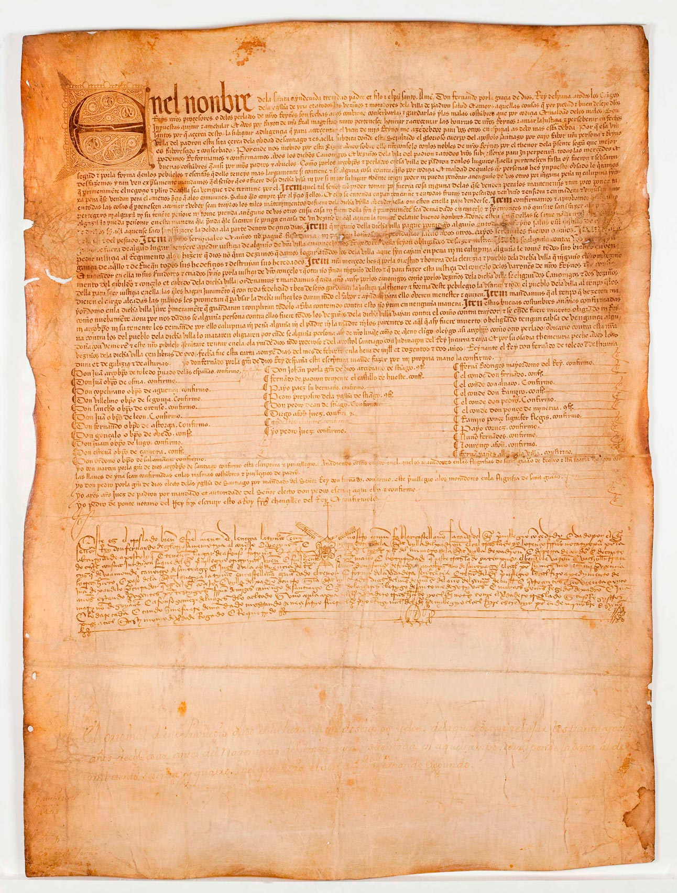
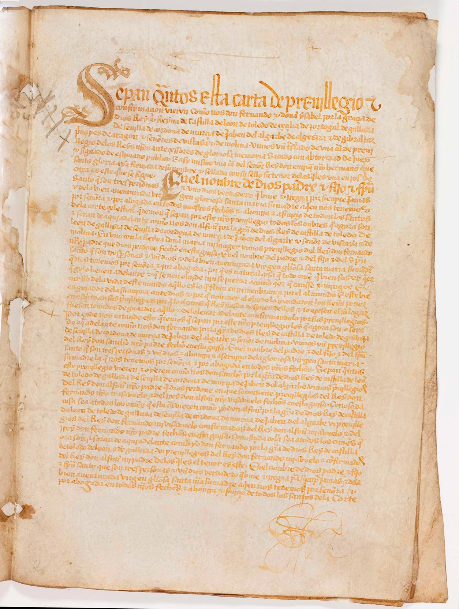
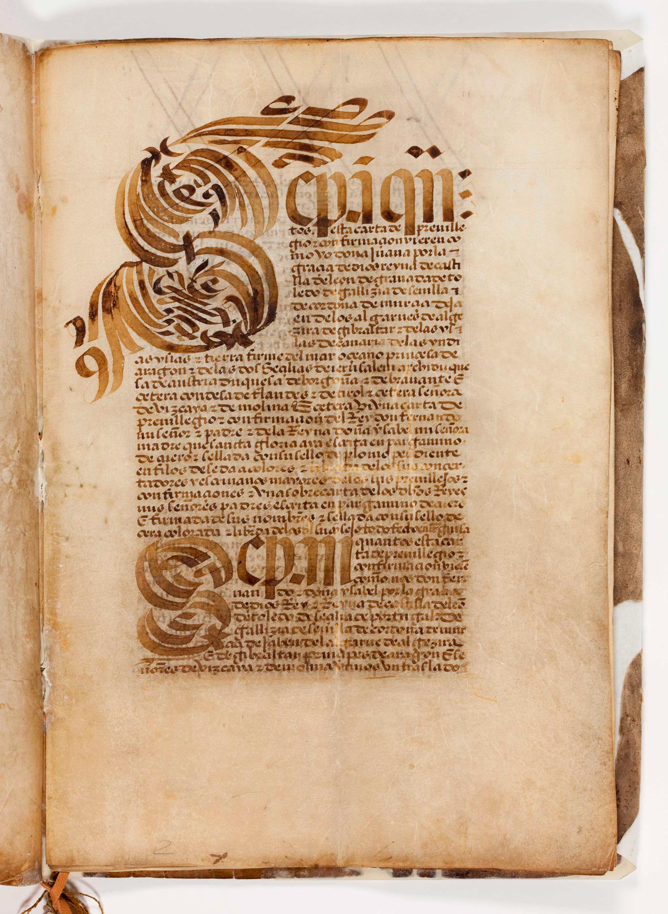
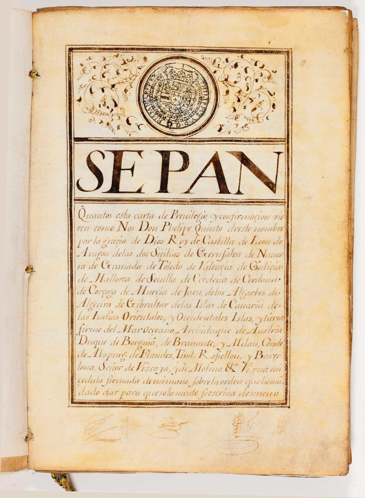
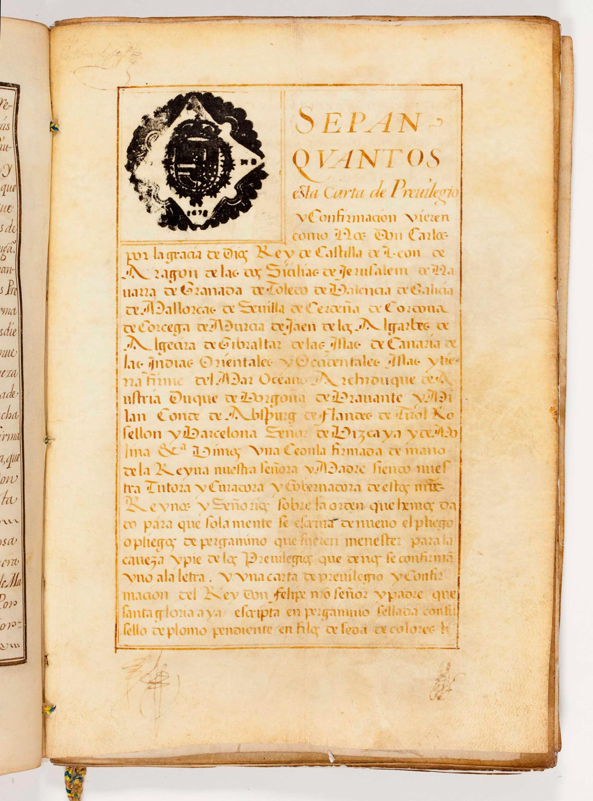
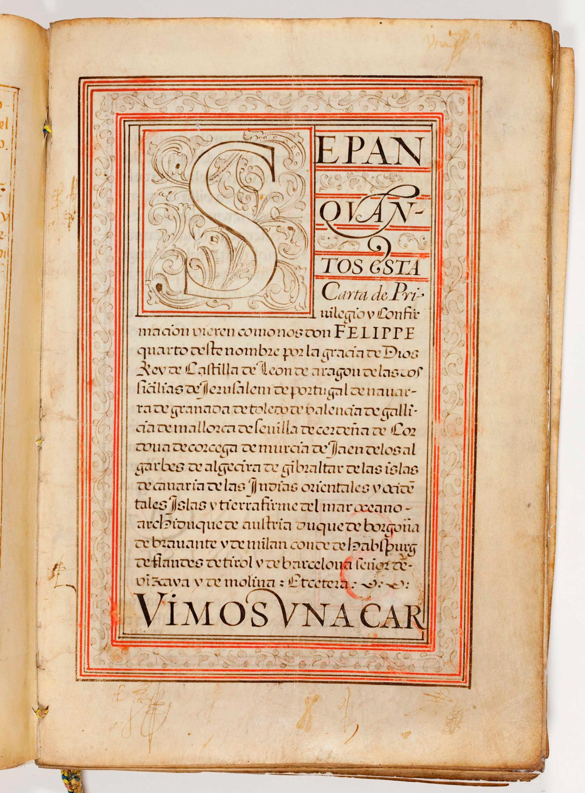

Dende o século XII e ata o século XVIII á vila de Padrón concedéronselle diferentes foros que eximían aos seus habitantes das vellas cargas señoriais.
A monarquía concédeos en virtude da predicación do apóstolo Santiago e de que aquí chegou o seu corpo despois de morto.
Tódolos reis manifestarán a crenza de ser o Pedrón o lugar sobre o cal estivo o Apóstolo, cláusula que non pon en dúbida ningún dos privilexios, os cales gárdanse no Arquivo Histórico Municipal.
A primeira fonte documental é o foro municipal de 1164 no que o rei Fernando II concédelle privilexios á vila de Padrón, confirmando os privilexios que o sei pai Afonso IX, xa lle concedera á vila. Documento manuscrito, escrito en latín.
Algúns dos privilexios concedidos foron:
- Ir a fonsado, era a obrigación que todos tiñas de presentarse armados para a guerra, cando o Rei saíse á campaña. Ordinariamente esta obrigación duraba tres días.
- Fosadero, pola contra, era o tributo que pagaban os que non podían asistir persoalmente á campaña.
- Gayosa, era un imposto que tiña que pagar todo vasalo a o seu señor, con motivo de certos acontecementos alegres e felices, como un nacemento ou unha voda.
- Luctuosa ou loytosa, vixente so en algunhas provincias, era exixible por señores e prelados cando morrían os seus súbditos, e consistía nunha xoia do defunto, a que sinalara este no testamento, ou a que escollera o señor ou o prelado.
- Portazgo, era o prezo que se pagaba por pasar por un sitio determinado dun camiño e peaxe, o que se pagaba por circular.
- Pedidalla, referíase a un tributo que se pedía para a guerra.
De seguido, mostramos as ficha técnicas dalgúns destes privilexios que foron dixitalizados e atópanse no Arquivo Histórico do Concello de Padrón:
| Copia en castelán do Privilexio de Fernando II. Copia en castelán do Privilexio que a SM o Rei Fernando concedeu á vila de Padrón. | ||
| Data: | 10 de marzo de 1498 | |
| Orixinal: |  Pergameo. Letra: gótica libraria no privilexio e gótica cursiva castelán cortesana no traslado do mesmo. | |
| Medidas: | 580 x 420 mm. | |
| Estado: | Bo | |
| Transcrip.: | Lorenço Fernández, notario público da Vil de Padrón e da terra de Cordeiro e do Couto. | |
| Carta de Privilexio de D. Fernando e Dª Isabel. Rei e Raiña de Castela, de León de Toledo, de Çeçilia (sic), de Portugal, de Gali¸ia, de Sevilla, de Córova, de Murçia, de Jahén, do Algarbe, de Algeçira e de Gibraltar, prinçipes de Aragón e señores de Viscaya e de Molina pola que confirma tódolos privilexios concedidos á vila de Padrón polos monarcas que lles antecederon. | ||
| Data: | 1476, maio, 11, Madrigal | |
| Orixinal: |  Pergameo. Letra cortesana | |
| Medidas: | 305 x 210mm. | |
| Estado: | Bo | |
| Transcrip.: | Fernán Álvarez, escribano maior dos Reis | |
| Carta de Privilexio de Dª Xoana de Castela, León, Granada, Galicia e Sevilla pola que confirma tódolos privilexios concedidos á vila de Padrón polos monarcas que lle antecederon. | ||
| Data: | 1510, maio, 28, Madrid | |
| Orixinal: |  Pergameo 21 folios. Letra gótica redonda | |
| Medidas: | 330 x 222 mm. | |
| Estado: | Deteriorado na portada e contraportada por mor da humidade | |
| Transcrip.: | Non se especifica | |
| Carta de Privilexio de Felipe V mediante a que se confirman tódolos privilexios concedidos á vila de Padrón polos monarcas que lle antecederon. | ||
| Data: | 1701, maio, 24, Buen Retiro 1708, agosto, 31, Madrid |
|
| Orixinal: |  Pergameo 60 folios. Letra humanística | |
| Medidas: | 315 x 220 mm. | |
| Estado: | Bo | |
| Transcrip.: | Francisco Nicolás de Castro. Juan Arias Maldonado e Juan Antonio, Diego de Raxoy y Juan Antonio Vallejo Hierro | |
| Carta de Privilexio de Carlos II na que se confirman tódolos privilexios concedidos á vila de Padrón polos monarcas que lle antecederon. | ||
| Data: | 1666, abril, 5, Madrid 1678, xullo, 19, Madrid |
|
| Orixinal: |  Pergameo 60 folios. Imitación de letra gótica pola importancia do documento e por que seguramente queríase imitala letra na que estaba escrita o documento orixinal | |
| Medidas: | 315 x 220 mm. | |
| Estado: | Bo | |
| Transcrip.: | Bartolomé de Legasa, Mateo LLorente e Cristobal de Torres de Medrano. | |
| Carta de Privilexio de Felipe IV na que se confirman tódolos privilexios concedidos á vila de Padrón polos monarcas que lle antecederon. | ||
| Data: | 1622. outubro, 12, San Lorenzo.
1623, maio, 16, Madrid |
|
| Orixinal: |  Pergameo 60 folios. Letra humanística | |
| Medidas: | 315 x 220 mm. | |
| Estado: | Bo | |
| Transcrip.: | Pedro de Contreras. | |